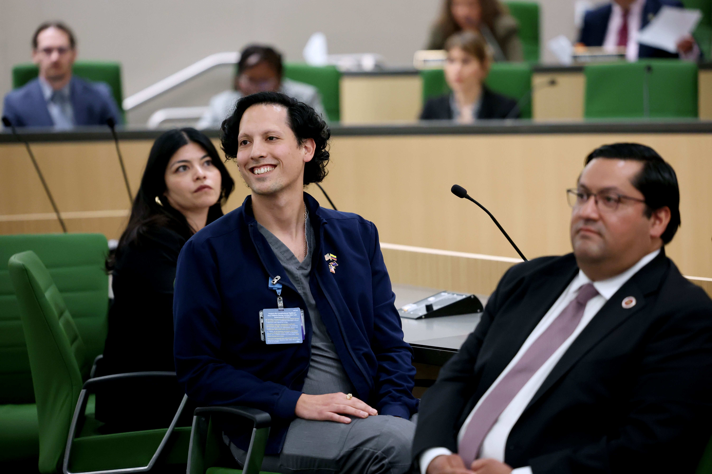

With Mar Velez and Senator Jesse Arreguín. Photo: Aaron Stigile / News21.
Healthcare Access & Immigrant Rights
Making the Case
for Care Without Fear.
Drawing on his work in patient care, Mikey testified before the Assembly Health Committee in support of California SB 81, alongside Senator Jesse Arreguín.
He described how fear of immigration enforcement can keep patients from seeking care and put healthcare workers at risk.
- Role
- Policy advocate & public witness
- Focus
- Patient access, privacy & worker protection